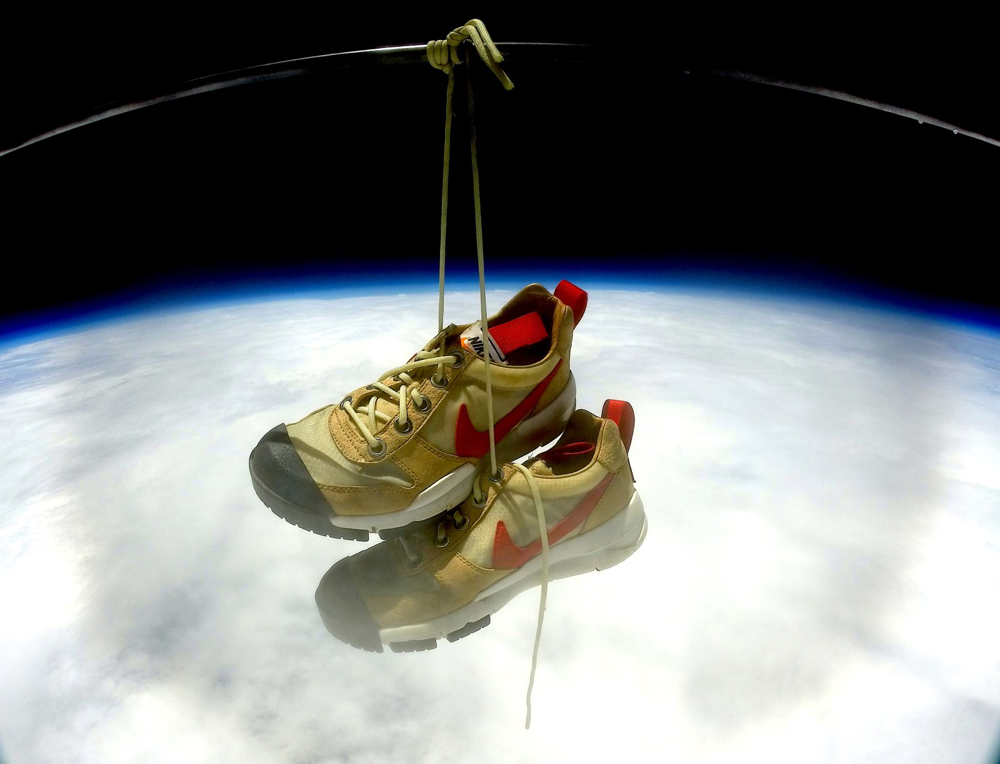
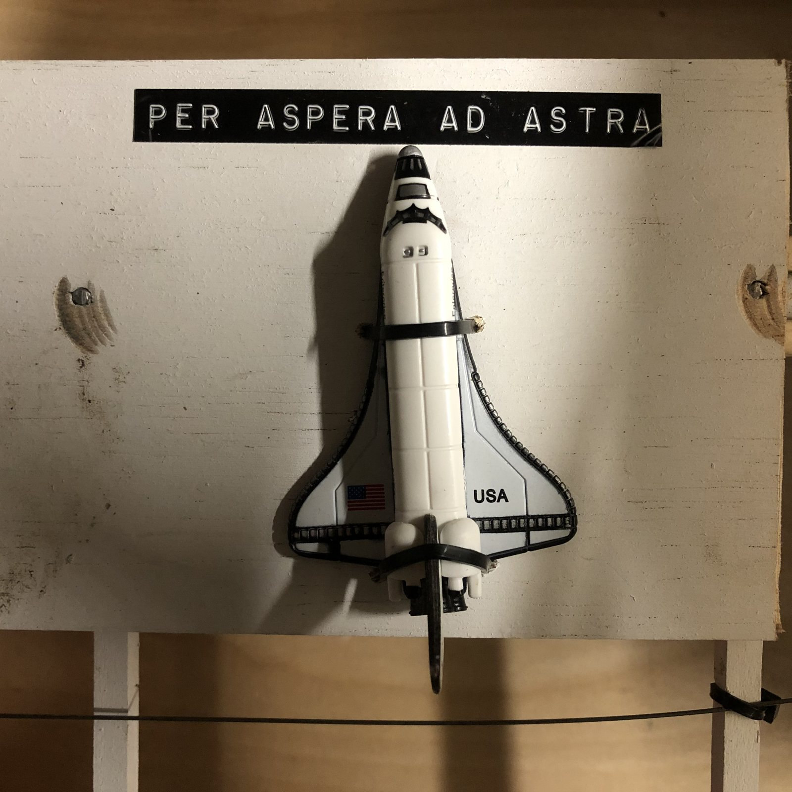

Quick Facts
Flight Plan & Airspace
Scheduled launch 23 May, 11:00a Central (1600Z), Groesbeck TX toward Frost TX. Pre-flight prediction: ~96,200 ft max altitude, 2h10m aloft, 43-mile range. Tracking on APRS 144.390 — W3ARD-11 (balloon), W3ARD-9 and W4IPA-9 (chase cars): every vehicle in the chase on the same map as the payload.
The NOTAM, filed and published with the flight card. The airspace paperwork is part of the mission, not an afterthought — post yours.
Payload Manifest
- 3× GoPro cameras on a custom rig (recovered)
- APRS transmitter — W3ARD-11 (recovered)
- SPOT Gen 3 satellite tracker — independent second system (recovered)
- Pixhawk flight controller flown as data logger (recovered)
- One plastic space shuttle, on loan from the flight director's son (recovered)
- Nike Mars Yard 2.5 sneakers — priceless (recovered, still in service)
Prediction vs. Reality
Predicted 96,200 ft; flew 100,255 ft — about 4% over, which says real-world Kaymont 1200s burst a little bigger than the spec sheet. Predicted 43 miles; flew ~40. Measured ascent of 4.8 m/s against the modeled fill. These numbers now calibrate the Pre-Flight tool — every published flight card makes the next prediction better. That's the whole reason to publish data, not just photos.
Recovery
Not straightforward: two attempts, ending in a stream crossing into thick wooded bottomland. The descent from 100k starts at 172 mph in air too thin for the chute to bite, and the woods don't care how good your prediction was. Redundant tracking — APRS for the flight, SPOT for the last hundred feet — earned its keep.
[Josh: the two-attempt recovery, the stream crossing, and how deep in the Bosque woods it actually was — dictate it and it goes here.]
Gallery
Selected frames from the flight. Images currently served from the original starduster.info archive; they'll move here with the full site migration.




Lessons This Flight Wrote
- Publish the flight card before, and the data card after. Prediction vs. reality is how the tools — and the pilot — get better.
- Post the NOTAM verbatim. It coordinates the airspace and it teaches the next balloonist what responsible looks like.
- Everyone in the chase gets an SSID. The map should show the whole operation, not just the balloon.
- Two independent trackers. APRS flew the mission; SPOT closed the last hundred feet in the woods.
- Budget honestly. ~$2,000 all-in; helium and latex are expended, everything else flies again.